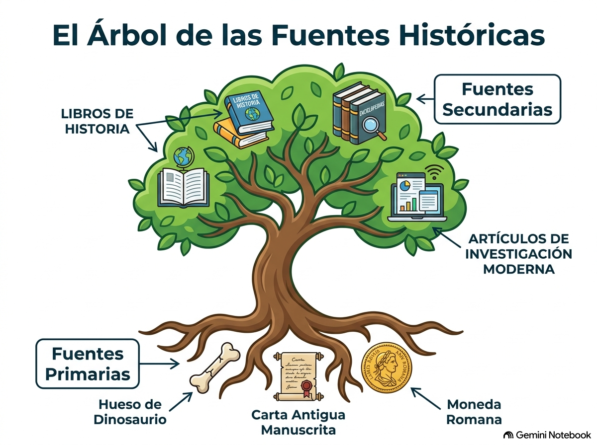

Introducción al conocimiento histórico
Bloque 0 • Conceptos, métodos de investigación y técnicas de trabajo de la asignatura.
1. El Concepto de Historia y Corrientes Historiográficas
La Historia es la ciencia que se ocupa del estudio de las sociedades humanas, analizando sus transformaciones (los cambios) y sus elementos de continuidad (lo que se mantiene igual a lo largo del tiempo). No consiste en memorizar fechas sin sentido, sino en analizar las causas, el desarrollo y las consecuencias de los acontecimientos en un lugar y momento concretos.
💡 Glosario de Conceptos Clave
• Ciencia histórica: Una ciencia con una doble dimensión: es científica (porque busca pruebas reales de forma ordenada) y es narrativa (porque describe y explica lo descubierto con palabras claras).
• Empatía histórica: El esfuerzo del investigador para "meterse en la piel" de las personas del pasado, logrando comprender su forma de pensar, sus miedos, sus límites cotidianos y los motivos de sus decisiones, sin juzgarles con las ideas de hoy.
¿Cómo ha evolucionado la forma de estudiar la Historia?
La forma de escribir la historia (llamada historiografía) ha cambiado mucho a lo largo de los siglos:
📜 Periodo clásico (Hasta principios del siglo XX)
Los historiadores de esta época se limitaban a realizar una narración descriptiva de grandes acontecimientos políticos, militares, diplomáticos y religiosos. Su centro de interés eran las hazañas individuales de los grandes personajes (reyes, militares, papas, ministros, nobles).
🇩🇪 El Historicismo (Siglo XIX)
Corriente liderada por el historiador alemán Leopold von Ranke. Defendía que el único objetivo de la Historia era "mostrar lo que realmente ocurrió" tal cual, sin intentar explicar el porqué de las cosas ni interpretarlas.
🇫🇷 La Escuela de Annales (Principios del siglo XX)
Fundada por los franceses Lucien Febvre y Marc Bloch. Revolucionó el estudio del pasado al proponer una perspectiva mucho más amplia: para entender la historia no bastaba con la política, había que interrelacionar la economía, la sociedad, la demografía y la cultura de toda la población, no solo de los reyes.
🛠️ El Marxismo o Concepción Materialista
Opuestos radicalmente al historicismo clásico. Los historiadores marxistas defienden que la Historia es, en esencia, la suma de los intentos de las clases sociales de cambiar las estructuras económicas y sociales mediante la lucha de clases.
2. Factores que influyen en la Historia (Espacio y Tiempo)
Cualquier hecho histórico se desarrolla siempre dentro de dos coordenadas fundamentales: el espacio y el tiempo.
🗺️ Coordenada A: El Espacio Geográfico
Es el territorio físico que ocupa una sociedad en un momento dado. Al historiador le interesan sus límites, clima, recursos (tierras fértiles, yacimientos minerales, plantas, animales) y cómo se distribuye la población en él. Existen dos teorías sobre cómo influye la geografía en el ser humano:
- Determinismo geográfico: Afirma que el ser humano depende totalmente del medio físico. Cree que a una misma causa geográfica siempre corresponde el mismo efecto social.
- Posibilismo geográfico: Sostiene que el medio ofrece opciones, pero que el ser humano tiene voluntad y capacidad tecnológica para modificar y adaptarse al entorno geográfico.
⏳ Coordenada B: Las Relaciones Temporales
El tiempo en la Historia es un flujo continuo que nunca se detiene, donde conviven los cambios rápidos con cosas que permanecen estables. Para ordenar los hechos históricos de forma lógica, distinguimos tres relaciones clave:
- Hechos Sincrónicos: Sucesos que ocurren al mismo tiempo y que dependen el uno del otro (por ejemplo: la Guerra de la Independencia de España y la creación de la Constitución de 1812).
- Hechos Contemporáneos: Sucesos que ocurren en la misma fecha pero que no tienen ninguna relación entre sí (por ejemplo: la revolución de 1868 en España y el inicio de la era Meiji en Japón).
- Hechos Diacrónicos: Acontecimientos que ocurren en épocas diferentes pero que tienen una relación directa de causa-efecto (por ejemplo: la conquista del espacio en el siglo XX es consecuencia del progreso tecnológico nacido con la Revolución Industrial en el siglo XIX).
El ritmo de los cambios: ¿Evolución o Revolución?
- Hay evolución cuando las transformaciones sociales se producen a un ritmo muy lento y progresivo.
- Una revolución es una transformación radical, muy profunda y rápida, que suele desarrollarse de manera violenta. Puede ser de carácter político, económico, social, científico, religioso o artístico.
3. El Método de Investigación Histórica
Los historiadores trabajan siguiendo un método científico riguroso para asegurarse de que su reconstrucción del pasado es imparcial y empírica, a pesar de que siempre exista cierta subjetividad. Este método consta de tres fases obligatorias:
- Fase 1: Formulación de hipótesis: Son suposiciones teóricas iniciales y provisionales que el historiador plantea basándose en su primer conocimiento del tema. Sirven como punto de partida para la investigación.
- Fase 2: Recopilación y análisis de datos: Se buscan activamente todas las fuentes históricas posibles. La información se ordena, se analiza críticamente y se contrasta con las hipótesis planteadas en la Fase 1 para ver si eran correctas.
- Fase 3: Redacción y publicación de conclusiones: Se redactan de forma lógica y ordenada los resultados obtenidos, los cuales pueden confirmar, desmentir o modificar la hipótesis original.
4. Las Ciencias Auxiliares
Como la Historia estudia todos los ámbitos del ser humano (político, económico, social y cultural), necesita la ayuda de otras ciencias para poder interpretar correctamente las pistas del pasado. A estas ciencias se las conoce como Ciencias Auxiliares.
🛠️ Ciencias Especializadas para el Historiador
Estas disciplinas ayudan directamente a descifrar y dar autenticidad a los documentos antiguos:
Otras ciencias de apoyo contemporáneo
Para analizar periodos más recientes, la historia se apoya en:
- Geografía: Permite localizar físicamente los hechos y evaluar el impacto del relieve en la sociedad.
- Filología: Ayuda a interpretar la evolución de las lenguas y su uso social.
- Sociología, Economía, Demografía y Estadística: Aportan herramientas científicas para estudiar las dinámicas sociales, monetarias, de población y flujos económicos cuantitativos.
5. La Medición del Tiempo y las Edades de la Historia
Medir el tiempo es vital en la Historia. No todas las culturas lo miden igual, pero todas eligen un hecho muy importante como punto de partida de su era:
- Era Cristiana: Su punto de partida es el nacimiento de Cristo (año 1). Los sucesos anteriores se marcan como a.C. (antes de Cristo) y los posteriores como d.C. (después de Cristo).
- Era Musulmana: Comienza en el año 622 d.C. con la Hégira (la huida de Mahoma de La Meca a Medina).
- Era Judía: Comienza en el 3760 a.C., fecha mítica de la creación del mundo según su tradición.
- Era China: Se inicia en el año 2697 a.C., con el nacimiento del primer emperador.
Unidades básicas de medida:
• Lustro: 5 años | • Década: 10 años | • Siglo: 100 años | • Milenio: 1000 años.
Las Grandes Edades de la Historia
Para facilitar el estudio del pasado, los historiadores dividen el tiempo en grandes periodos caracterizados por una misma cultura, sociedad o forma de pensar:

Imagen 1: Las Edades de la Historia. Observa los grandes cambios tecnológicos e históricos que sirven de frontera entre etapas.
🪨 Prehistoria (Desde hace 5 millones de años hasta 3.500 a.C.)
Comienza con la aparición de los primeros homínidos y termina con la invención de la escritura. Se divide en:
- Paleolítico (Edad de Piedra Tallada): Ser humano nómada, cazador y recolector, sociedad igualitaria.
- Neolítico (Edad de Piedra Pulida): Nace la agricultura y la ganadería. El hombre se hace productor, sedentario y surgen poblados con organización social compleja.
- Edad de los Metales: Nace la metalurgia (Cobre, Bronce y Hierro).
🏛️ Edad Antigua (3.500 a.C. hasta el siglo V d.C.)
Empieza con la invención de la escritura y termina con la caída del Imperio Romano de Occidente en el año 476 d.C.
Características: Nacimiento de grandes imperios y ciudades organizadas. Sociedad desigual basada en la esclavitud.
🏰 Edad Media (Siglo V d.C. hasta el siglo XV d.C.)
Se extiende desde la caída de Roma (476 d.C.) hasta el descubrimiento de América (1492 d.C.).
Características: Época de castillos y catedrales. Gran esplendor de la civilización musulmana. La población abandona las ciudades y pasa a vivir y trabajar en el campo (sociedad feudal).
⛵ Edad Moderna (Siglo XV d.C. hasta el siglo XVIII d.C.)
Empieza en 1492 d.C. y finaliza con el estallido de la Revolución Francesa en 1789 d.C.
Características: Grandes avances y exploraciones geográficas. Nace la imprenta de Gutenberg (difusión de la cultura) y ocurren sangrientas guerras religiosas en Europa.
🏭 Edad Contemporánea (Desde finales del siglo XVIII hasta el presente)
Se inicia con la Revolución Francesa (1789 d.C.) hasta nuestros días.
Características: Aparece la Revolución Industrial y las grandes fábricas. Desarrollo masivo de la ciencia, la tecnología y el transporte. Nacimiento de los sistemas políticos democráticos modernos.
6. Las Fuentes Históricas y el Análisis de Pruebas
Las fuentes históricas son todos los documentos, testimonios u objetos materiales que nos transmiten información sobre el pasado. A más reciente sea un suceso, más fuentes tendremos para investigarlo.

Imagen 2: El Árbol de las Fuentes Históricas. Memoriza la diferencia entre fuentes primarias (hechas en el momento) y secundarias (estudios posteriores).
¿Cómo se clasifican las fuentes?
Para no confundirnos, los historiadores clasifican las fuentes en tres categorías:
🔍 A) Según su ORIGEN (La clasificación más utilizada)
- Fuentes Primarias (Directas): Son los materiales originales creados por los protagonistas y testigos en la misma época en la que sucedieron los hechos (por ejemplo: la momia de un faraón, las cartas de Cristóbal Colón o una ley antigua).
- Fuentes Secundarias (Indirectas / Historiográficas): Son libros, enciclopedias o estudios escritos por historiadores actuales después de analizar y procesar las fuentes primarias.
📂 B) Según su SOPORTE FÍSICO o naturaleza
- Escritas: Documentos públicos oficiales (leyes, actas) o privados (diarios, cartas personales, periódicos, actas notariales).
- Materiales/Arqueológicas: Objetos físicos (herramientas, ropa, monedas antiguas, armas, ruinas de edificios o esqueletos).
- Gráficas/Imágenes: Pinturas, grabados antiguos, carteles de propaganda y fotografías de la época.
- Orales: Testimonios con voz grabada o transmitidos por boca a boca (entrevistas, canciones populares, leyendas).
- Audiovisuales: Películas, grabaciones de televisión, documentales o vídeos en formato digital (soporte propio del siglo XX).
- Estadísticas: Datos numéricos agrupados para mostrar evoluciones cuantitativas (tablas de natalidad, gráficos).
- Cartográficas: Representaciones en mapas, ya sean del espacio en el momento del suceso (sincrónicas) o de su evolución histórica (diacrónicas).
🎯 C) Según su CONTENIDO específico
- Históricas: Crónicas y narraciones del pasado. | Jurídicas: Leyes, normas, códigos de justicia, tratados internacionales.
- Periodísticas: Noticias y periódicos contemporáneos de los hechos. | Personales: Diarios de vida privados, cartas privadas o testamentos familiares.
- Políticas: Discursos oficiales, proclamas militares, programas de partidos. | Sociales/Económicas: Informes financieros, censos de población, memorias de producción.
⚠️ El Control de Calidad: La Crítica de Fuentes
Un historiador riguroso nunca acepta un documento sin antes verificar si es verídico y auténtico mediante dos análisis fundamentales:
- 1. Crítica de Procedencia: Sirve para identificar al autor, datar la fuente en su año exacto (estudiando el soporte, el tipo de letra o la tinta) y determinar el lugar geográfico y social de origen del texto.
- Crítica Externa: Analiza la parte física del documento y se apoya en las Ciencias Auxiliares para verificar si los materiales son reales o es una imitación de otra época.
- Crítica Interna: Analiza el contenido para averiguar las intenciones reales del autor, detectar sesgos, mentiras interesadas o censuras de la época.
- 2. Crítica de Restitución: Analiza la forma externa detalladamente para comprobar si el documento ha sido manipulado, borrado, retocado o falsificado posteriormente, intentando descubrir cómo era el manuscrito original del autor.
7. Guía Paso a Paso para realizar un Trabajo de Investigación
Si tienes que hacer un trabajo académico escrito para clase, sigue estas pautas formales paso a paso para evitar el plagio y lograr una presentación excelente de nivel de Bachillerato:
📝 Lista de Tareas para Investigar como un Profesional
- Paso 1: Búsqueda exhaustiva: Busca información relacionada con tu tema utilizando diversas fuentes (páginas web fiables, libros de texto, prensa o mapas).
- Paso 2: Lectura atenta y toma de notas: Lee despacio la información encontrada y anota en un cuaderno o documento digital las ideas principales.
- Paso 3: Contraste de información: Analiza críticamente la información y contrástala entre diferentes autores para ver si coinciden o si hay contradicciones.
- Paso 4: Selección de contenidos: Quédate únicamente con los datos más valiosos y de mayor importancia para tu tema, desechando lo irrelevante.
- Paso 5: Elaboración de un esquema base: Estructura tu trabajo en un esquema ordenado con breves títulos y apartados numerados que usarás como guía de redacción.
- Paso 6: Redacción final (¡Sin copiar y pegar!): Escribe el trabajo exponiendo las conclusiones de forma ordenada, clara, coherente y precisa. No copies textos de internet de forma literal. Si pones una frase exacta de un autor, colócala siempre entre comillas ("...") y cita de dónde la has sacado.
- Paso 7: Cuidado de la presentación formal: Tu trabajo debe incluir de manera obligatoria:
- Portada formal: Título llamativo del trabajo, tu nombre completo, curso, asignatura, fecha y nombre del profesor a quien va dirigido.
- Índice: Páginas ordenadas de cada sección para que el lector pueda localizar el contenido.
- Bibliografía ordenada: Lista de libros, revistas y enlaces web consultados, indicando siempre: el autor, título, editorial y año de publicación.
8. Fichas de Comentario de Examen (Paso a Paso)
Usa estos esquemas simplificados para preparar tus exámenes oficiales de Historia:
📝 Comentario de un Texto Histórico
1. Identificar el Documento: Indica su naturaleza:
- Literario: Si es una obra literaria, cartas personales, memorias, artículos de prensa subjetivos o diarios.
- Jurídico: Si recoge derechos, deberes o leyes oficiales articuladas (constituciones, decretos, tratados internacionales).
- Circunstancial: Producto directo de un hecho del momento (discursos, manifiestos militares, proclamas).
- Historiográfico: Texto escrito por un historiador moderno analizando el pasado.
2. Encuadre Histórico: Señala la fecha (cronología), el autor (importancia de su personaje), y el destinatario (público o privado, individual o colectivo).
3. Análisis de Contenido: Explica las ideas principales y secundarias sin repetir frases textuales del escrito.
4. Relación Histórica: Conecta el texto con las causas y consecuencias del tema estudiado en clase.
5. Valoración Crítica: Reflexiona sobre su veracidad, posibles sesgos del autor y su utilidad real para comprender el pasado.
🗺️ Comentario de un Mapa Histórico
1. Encuadre básico: Di el título del mapa, el año representado, la escala y su proyección geográfica.
2. Tipo de Mapa: Clasifícalo según su contenido:
- Político-administrativo: Fronteras territoriales de los estados antiguos.
- Militar: Campañas de batallas, frentes de guerra o movimientos de ejércitos.
- Económico: Rutas comerciales, líneas de ferrocarril o desamortizaciones de tierras.
- Demográfico: Densidades o movimientos migratorios de población.
- Electoral: Distribución del voto o influencia de partidos políticos.
3. Análisis de Leyenda: Describe los colores, flechas y símbolos cartográficos de la leyenda.
4. Explicación Histórica y Valoración: Explica qué proceso histórico se plasma en el mapa y evalúa si la información es completa o inexacta en comparación con tus apuntes.
🖼️ Comentario de una Imagen o Cartel
- Datos básicos: Año en que se hizo, autor, destinatarios y dónde se publicó originalmente.
- Tipología: Clasifica su tema (electoral-propagandístico, social, militar, religioso o cultural).
- Estructura Visual: Composición (relación de elementos), Encuadre (punto de vista del fotógrafo o dibujante) y Color (uso para ambientar la realidad).
- Descripción detallada: Describe lo que ves en primer plano, al fondo, de lo general a lo particular o de izquierda a derecha.
- Mensaje central: Analiza las ideas principales que transmite la imagen y relaciónalas con el contexto y la posible existencia de censura estatal.
📊 Comentario de una Gráfica o Tabla de Datos
1. Presentación: Identifica el título, el periodo cronológico abarcado y las unidades de medida (porcentajes, miles, millones).
2. Análisis Estadístico: Observa la tendencia general de los datos. Señala los incrementos, descensos, años con picos máximos y mínimos, o si se mantiene constante.
3. Interpretación y Contexto: Explica el motivo de las fluctuaciones de los números basándote en los procesos históricos (por ejemplo: si la natalidad cae debido a una guerra o epidemia).
4. Valoración: Explica qué aporta esta gráfica al conocimiento de la época y sugiere otras fuentes para contrastar sus datos.